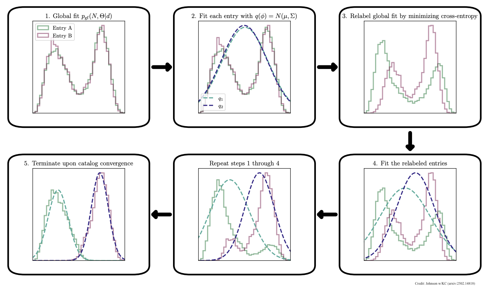
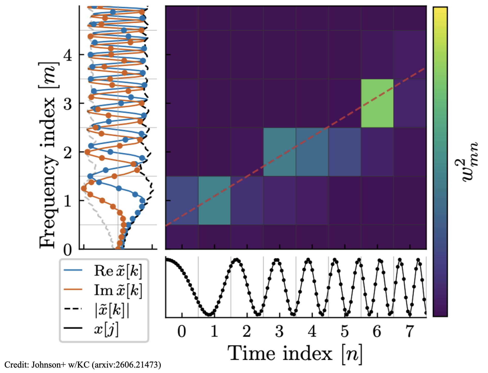

LISA
The LISA space-based gravitational-wave detector, scheduled for launch in the mid-2030s, will give us access to the millihertz gravitational-wave Universe. There, we will find dozens to hundreds of massive black hole binaries, hundreds of extreme mass-ratio inspirals, millions of galactic white-dwarf binaries, stochastic signals, and many more. We will also face unique challenges: while LIGO detects signals that last tens to hundreds of milliseconds every few days, LISA's signals will last for weeks to the entire mission duration and overlap.

The large number of signals overlapping in the LISA dataset requires a "global fit" in which an unknown number of signals are modeled simultaneously. This introduces a "label-switching ambiguity" for sources in the same class that overlap, making it challenging to distill a traditional astronomical catalog. Unlike LIGO, which sees individual events, LISA will be extremely signal-dense, with millions of binary systems in our own galaxy, thousands of which will be resolvable, overlapping in frequency and time. The label-switching problem means that even though we can detect these thousands of resolvable binaries, we cannot immediately tell which is which, or create a catalog of them. Then-Caltech postdoctoral scholar Aaron Johnson led a study that proposed a solution to the label-switching problem. The PETRA algorithm (it technically stands for something, but it is really named after a cat!) solves the label-switching problem by using an iterative strategy to sort out which detected signals correspond to which actual gravitational-wave sources. The algorithm first fits all the signals (which are mixed up at this point) with a simple model. It then systematically reassigns or "shuffles" the source labels - essentially trying different ways of matching the measured parameters to individual binaries - and picks the arrangement that makes the most sense from an astronomical perspective. The final result is a clean catalog where each detected binary system has well-defined properties and a probability of being a real astrophysical source, transforming what was initially a confusing jumble of overlapping signals into an organized list that astronomers can use to study individual gravitational-wave sources throughout the galaxy.

A second unique challenge we will face in LISA data is that during the year-long observation the noise in the detector varies. The problem is compounded by the fact that part of LISA's noise will not be instrumental, but astrophysical: millions of galactic white-dwarf binaries will create a "confusion" noise. The confusion will be higher when the satellite is "facing" the galactic center ,where most sources reside, and lower when it faces away. The changing noise invalidates a core assumption that underlies LIGO's analyses: stationarity, i.e., noise whose properties remain constant over time. Stationarity makes the Fourier domain computationally efficient and thus the natural choice for LIGO. But LISA will not share that property and will therefore have to abandon the frequency domain. An appealing option is the hybrid time-frequency domain: rather than treating the entire data as one long stream in time or frequency alone, we slice the data into windows and track how the frequency content changes over time. With Johnson we set out to explore such time-frequency methods in depth as they are not widespread among gravitational-wave scientists. In the first part of a planned series of studies, we explained the origin and mathematical underpinnings of such methods and carefully derived all relevant expressions for a particular type of time-frequency transform, the Wilson-Daubechies-Meyer transform. This transform works well for gravitational-wave signals as it can localize their chirps in both frequency and time. Our work aims to bridge the mathematical literature with practical gravitational-wave applications, offering the rigor required for such a fundamental shift in the data analysis framework.